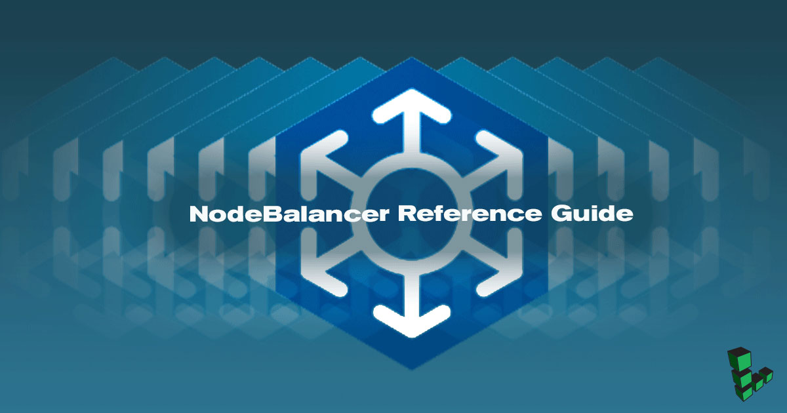

NodeBalancer Reference Guide
Updated by Linode Written by Christopher S. Aker
The Linode Cloud Manager has arrived!View the Linode Cloud Manger version of the NodeBalancer Reference Guide guide.

This is the NodeBalancer reference guide. Please see the NodeBalancer Getting Started Guide for practical examples.
Adding a NodeBalancer
Click the NodeBalancers tab, and then “Add a NodeBalancer”. You must choose the same location as your back-end Linodes for a given deployment.
NodeBalancer Settings
Here you may adjust the NodeBalancer’s display label, along with the ‘Client Connection Throttle.’ The connection throttle limits the number of subsequent new connections from the same client IP address.
Configuration
Each NodeBalancer config adds another port that the NodeBalancer will listen on. For instance, if you wish to balance both port 80 and 81, you’ll need to add two configuration profiles to your NodeBalancer.
Port
The public port for this configuration. Ports 1 through 65534 are available for balancing, provided that the port is not already in use by another config.
Protocol
You can choose either TCP, HTTP, or HTTPS. HTTP and HTTPS enable some additional options described below.
TCP: Use TCP mode to balance non-HTTP services.
HTTP: HTTP KeepAlives are forced off in HTTP mode.
HTTPS: With HTTPS selected, your NodeBalancer will terminate SSL connections. As with HTTP mode, KeepAlives will be disabled and the client’s IP address will be provided in the X-Forwarded-For header.
If HTTP or HTTPS is selected, the NodeBalancer will add an X-Forwarded-Proto header, with a value of either http or https, to all requests sent to the backend. The header value is based on the type of request (HTTP or HTTPS) originally received by the NodeBalancer.
NoteNote that HTTPS requests (and HTTP requests, for that matter) are terminated on the NodeBalancer itself, and that’s where the encryption over a public network ends. NodeBalancers use the HTTP protocol to communicate with your backends over a private network. You should have your backends listen to the NodeBalancer over HTTP, not HTTPS.
Algorithm
How initial new connections are allocated across the backend Nodes.
- Round Robin - Allocates connections in a weighted circular order across the backend Linodes.
- Least Connections - Tracks each backend Linode’s connection count, and allocates new connections to the node with the least connections.
- Source IP - Modulates the client’s IP to allocate them to the same backend on subsequent requests. This works so long as the set of backend Linodes doesn’t change, however Session Stickiness affects this behavior.
Session Stickiness
NodeBalancers have the ability for Session Persistence - meaning subsequent requests from the same client will be routed to the same backend Node when possible.
- None - No additional Session Stickiness will be performed.
- Table - The NodeBalancer itself remembers which backend a given client IP was initially load balanced to (see Algorithm, above), and will route subsequent requests from this IP back to the same backend, regardless of changes to the number of healthy backend nodes. Each entry in the table will expire 30 minutes from the time that it was added. If a backend node goes offline, entries in the table for that node are removed.
- HTTP Cookie - Requires the configuration protocol be set to HTTP. The NodeBalancer sets a cookie named
NB_SRVIDidentifying the backend a client was initially load balanced to (see Algorithm, above), and will route subsequent requests from this IP back to the same backend, regardless of changes to the number of healthy backend nodes. If a backend node goes offline, the client is balanced to another backend and the cookie is rewritten.
If you need Session Persistence it is our recommendation to utilize both the Source IP algorithm in combination with either Table or HTTP Cookie if possible.
Certificate and Private Key
If you select the HTTPS protocol, the Certificate and Private Key fields will appear.
{kind=link}
Copy your certificate into the Certificate field. If you have chained certificates, you can copy all of them into the text field, one after the other.
Copy your passphraseless private key into the Private Key field.
You can purchase an SSL certificate or create your own.
TLS Cipher Suites
If your NodeBalancer must support users accessing your application with older browsers such as Internet Explorer 6-8, you should select the Legacy option, which sets the following cipher suite profile:
!RC4:HIGH:!aNULL:!MD5
However, bear in mind that by gaining backwards compatibility, your NodeBalancer will use weaker SSL/TLS cipher suites. For all other implementations, the default Recommended cipher suite option should be used, which includes:
ECDHE-RSA-AES128-GCM-SHA256:ECDHE-ECDSA-AES128-GCM-SHA256:ECDHE-RSA-AES256-GCM-SHA384:ECDHE-ECDSA-AES256-GCM-SHA384:DHE-RSA-AES128-GCM-SHA256:DHE-DSS-AES128-GCM-SHA256:kEDH+AESGCM:ECDHE-RSA-AES128-SHA256:ECDHE-ECDSA-AES128-SHA256:ECDHE-RSA-AES128-SHA:ECDHE-ECDSA-AES128-SHA:ECDHE-RSA-AES256-SHA384:ECDHE-ECDSA-AES256-SHA384:ECDHE-RSA-AES256-SHA:ECDHE-ECDSA-AES256-SHA:DHE-RSA-AES128-SHA256:DHE-RSA-AES128-SHA:DHE-DSS-AES128-SHA256:DHE-RSA-AES256-SHA256:DHE-DSS-AES256-SHA:DHE-RSA-AES256-SHA:AES128-GCM-SHA256:AES256-GCM-SHA384:AES128-SHA256:AES256-SHA256:AES128-SHA:AES256-SHA:AES:CAMELLIA:!aNULL:!eNULL:!EXPORT:!DES:!RC4:!MD5:!PSK:!aECDH:!EDH-DSS-DES-CBC3-SHA:!EDH-RSA-DES-CBC3-SHA:!KRB5-DES-CBC3-SHA
Diffie-Hellman Parameters
Diffie-Hellman key exchange is a method for enabling forward secrecy for SSL/TLS connections. Configuring Diffie-Hellman is normally achieved by generating a dhparams.pem file and then updating your web server’s cipher suites list.
A NodeBalancer’s SSL/TLS settings can’t be accessed in the same way you can view your web server configuration, but you can still use Diffie-Hellman with your SSL certificate. This is accomplished by concatenating your certificate file with the contents of your dhparams.pem file and then supplying that to the Certificate field of your NodeBalancer’s HTTPS configuration. The result of this concatenation will look similar to the example:
-----BEGIN CERTIFICATE-----
YOUR_CERTIFICATE_INFORMATION
-----END CERTIFICATE-----
-----BEGIN DH PARAMETERS-----
YOUR_DHPARAMS_INFORMATION
-----END DH PARAMETERS-----
CautionTo avoid security vulnerabilities, it is recommended that you use at least 2048 bits when generating your Diffie-Hellman parameters:
openssl dhparam -out dhparams.pem 2048
Health Checks
NodeBalancers perform both passive and active health checks against the backend nodes. Nodes that are no longer responding are taken out of rotation.
Passive
When servicing an incoming request, if a backend node fails to connect, times out, or returns a 5xx response code (excluding 501 and 505), it will be considered unhealthy and taken out of rotation.
Passive health checks can be disabled if you choose:
- From the Linode Manager, click the NodeBalancers tab.
- Select your NodeBalancer and choose Edit.
- Under the Configurations section at the top of the page, choose Edit.
- Scroll down and uncheck the Enabled box under Passive Checks. Then click Save Changes.
Active
NodeBalancers also proactively check the health of back-end nodes by performing TCP connections or making HTTP requests. The common settings are:
- Check Interval - Seconds between active health check probes.
- Check Timeout - Seconds to wait before considering the probe a failure. 1-30.
- Check Attempts - Number of failed probes before taking a node out of rotation. 1-30.
Three different Health Check Types exist:
- TCP Connection - requires a successful TCP handshake with a backend node.
- HTTP Valid Status - performs an HTTP request on the provided path and requires a 2xx or 3xx response from the backend node.
- HTTP Body Regex - performs an HTTP request on the provided path and requires the provided PCRE regular expression matches against the request’s result body.
Nodes
NodeBalancers work over the private network. Backend nodes must have a private IP configured via static networking.
Once you have established a basic configuration, you will be asked to set up “Nodes”. Nodes are combinations of addresses and ports that you wish to balance.
- Label - This option allows you to label the Node. You can specify any value here.
- Address - The address portion of this node corresponds to your Linode’s private IP address.
- Weight - Each of these nodes will also have a weight assigned to it that determines how connections will be balanced to it. Nodes with a higher weight will receive more connections than nodes with a lower weight.
Node Status
A Node’s status, as seen from the perspective of the NodeBalancer, is indicated via its status field. It either has a value of UP or DOWN. The Last Status Change field also indicates the last time this node’s status changed.
Node Mode
Changes to a Node’s Mode are applied within 60 seconds.
- Accept - allows the node to accept incoming connections so long as it is healthy.
- Reject - remove the node from rotation; discontinue health checks on this backend. Existing connections remain active.
- Drain - will only receive connections from clients whose session stickiness points to this node.
- Backup - will only accept traffic if all other nodes are down.
The use-case for Drain would be to set a node to Drain a day or so in advance of taking the node down. That way existing sessions would likely have ended.
Backup is a useful mode if you use frontend caching servers, such as Varnish, and want to direct traffic to the origin servers if the caching servers are down.
X-Forwarded-For Header
NodeBalancers add an X-Forwarded-For (XFF) HTTP header field, which allows your nodes to identify a client’s originating IP address. This is useful for logging purposes. Here’s an example XFF HTTP header:
X-Forwarded-For: 196.180.44.172
You’ll need to configure your web server software to use the XFF header.
Apache
If you’re using the Apache web server, you can use the mod_rpaf to replace REMOTE_ADDR with the clent’s IP address in the XFF header. After you install the module, you’ll need to specify 192.168.255.0/24 as a proxy in httpd.conf.
Nginx
If you’re using the Nginx web server, you can add the following lines to your Nginx configuration file:
real_ip_header X-Forwarded-For;
set_real_ip_from 192.168.255.0/24;
This will allow Nginx to capture the client’s IP address in the logs.
IP Address Range
NodeBalancers all have private IP addresses in the 192.168.255.0/24 range. It’s important to note that while their public IP address is persistent, the private IP address will change. When configuring a firewall or other network restriction on back-end Linodes, be sure to allow the entire 192.168.255.0/24 range and not a specific IP address.
Join our Community
Find answers, ask questions, and help others.
This guide is published under a CC BY-ND 4.0 license.